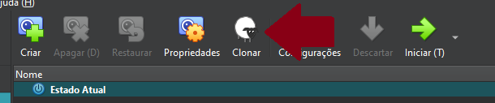

Configuração da VM Frontend¶
A VM Frontend é responsável por hospedar a interface do sistema utilizando o servidor web nginx, e também atua como servidor de backups, armazenando os arquivos de backup de todas as outras VMs, incluindo ela mesma. Por esse motivo, ela possui um arquivo authorized_kyes com a chave pública rsa de cada uma das outras máquinas virtuais em seu usuário backup_sys, permitindo que os arquivos de backup sejam recebidos via scp.
1. Clonando a VM Base¶
Começamos fazendo o clone do tipo completo da VM base, que foi criada previamente.

1.1 Configuração da Interface em modo bridge¶
Para cada VM que clonamos foi necessário atribuir um IP próprio editando o arquivo de interfaces:
vim /etc/network/interfaces
Como a nossa interface em modo bridge é o adaptador 2, ela fica identificada como eth1:
auto lo
iface lo inet loopback
auto eth0
iface eth0 inet dhcp
auto eth1
iface eth1 inet static
address 192.168.0.3
netmask 255.255.255.0
Após salvar o arquivo reiniciamos o serviço:
rc-service networking restart
2. Alterando o Hostname¶
Para diferenciar a VM Frontend das demais, alteramos seu hostname para frontend, editando o arquivo de hostname:
vim /etc/hostname
As alterações no hostname só têm efeito após um reboot:
3. Configurando resolução de nome para os IPs¶
Para nosso projeto utilizamos o nome backend.llw para o backend e é através dele que o frontend realiza requisições, então foi necessário alterar o arquivo hosts:
vim /etc/hosts
E informamos o IP do backend com seu respectivo nome:
"192.168.0.1" backend.llw
4. Arquivo Hosts no Windows¶
Editamos o arquivo hosts do Windows com permissões de administrador que fica localizado no seguinte diretório:
C:\Windows\System32\drivers\etc\hosts
E informamos o IP do backend com seu respectivo nome assim como fizemos na VM:
192.168.1.106 backend.llw
5. Instalando o Nginx¶
Instalamos o servidor web nginx:
apk add nginx
Iniciamos o serviço e configuramos para que inicie automaticamente:
rc-service nginx start
rc-update add nginx
6. Configurando o Nginx¶
Editamos o arquivo de configuração do nginx:
vim /etc/nginx/http.d/default.conf
Adicionamos logs de acesso e de erros no arquivo:
access_log /var/log/nginx/frontend_access.log;
error_log /var/log/nginx/frontend_error.log;
Indicamos o caminho onde os nossos arquivos estáticos de frontend estão localizados:
location / {
root /opt/frontend;
index index.html;
try_files $uri $uri/ /index.html;
}
E recarregamos o nginx para confirmar as alterações:
nginx -s reload
7. Buildando o Frontend¶
No Windows antes de fazer o build do frontend, foi necessário configurar corretamente o endereço IP da API Backend.
Editamos o arquivo environment.server.ts do angular:
export const environment = {
production: true,
apiUrl: 'http://backend.llw:8080'
};
Realizamos o build e compactamos os arquivos em um .zip, para só então realizar o envio via scp para a VM no diretório que criamos em /opt/frontend
scp site.zip root@192.168.1.105:/opt/frontend/
Já na VM descompactamos o arquivo usando o comando:
unzip site.zip
Com esse passo já foi possível visualizar a tela inicial do projeto utilizando o ip da VM Frontend no navegador.

8. Preparando o ambiente para o backup¶
Criamos um diretório para armazenar os backups:
mkdir /opt/backup/
Em seguida diretórios que separam os backups buscando organizar os arquivos:
mkdir /opt/backup/frontend/
mkdir /opt/backup/backend/
mkdir /opt/backup/database/
E por fim adicionamos um novo usuário chamado backup_sys definindo a home dele dentro do diretório de backups:
adduser -h /opt/backup backup_sys
9. Recebendo as chaves RSA das outras VM's:¶
9.1 Criando o par de chaves¶
Na VM Backend e Database criamos as chaves RSA:
ssh-keygen -t rsa -b 4096 -f id_rsa
E na VM Frontend editamos o arquivo de configuração do ssh:
vim /etc/ssh/sshd_config
Permitimos o login com senha provisoriamente, apenas para conseguirmos enviar a chave pública:
PasswordAuthentication yes
Reiniciamos o serviço para aplicar as configurações:
rc-service sshd restart
9.2 Enviando a chave pública para backup_sys¶
Enviamos a chave pública da VM Backend para o backup_sys modificando o nome para authorized_keys:
scp id_rsa.pub backup_sys@frontend.llw:/opt/backup/.ssh/authorized_keys
Em seguida enviamos a chave pública da VM Database para o backup_sys, mas sem dar um nome diferente para a chave:
scp id_rsa.pub backup_sys@frontend.llw:/opt/backup/.ssh/
Na VM Frontend, utilizamos o comando cat para adicionar a segunda chave pública no final do arquivo authorized_keys:
cat /opt/backup/.ssh/id_rsa.pub >> /opt/backup/.ssh/authorized_keys
Apagamos o arquivo id_rsa.pub que ficou sobrando:
rm /opt/backup/.ssh/id_rsa.pub
Modificamos as permissões da chave:
chmod 600 /opt/backup/.ssh/authorized_keys
E alteramos o proprietário dessa pasta .ssh localizada em /opt/backup:
chown -R backup_sys:backup_sys /opt/backup/.ssh
9.3 Retirando a autenticação por senha¶
Por fim editamos novamente o sshd_config, dessa vez para impedir o acesso por senha:
PasswordAuthentication no
E reiniciamos o serviço para aplicar as configurações uma última vez:
rc-service sshd restart
10. Configurando o script de backup local¶
Criamos o arquivo em /root/:
vim /root/backup_front
E preenchemos da seguinte forma:
#!/bin/sh
timestamp=$(date '+%Y-%m-%d_%H-%M-%S')
temp_dir="/tmp/backup_front_$timestamp"
front_dir="$temp_dir/front"
front_end="/opt/frontend"
authorized_keys="/root/.ssh/authorized_keys"
tar_file="/opt/backup/frontend/backup_front_$timestamp.tar.gz"
echo "Criando diretórios temporários, Data: $timestamp"
mkdir -p "$front_dir" || { echo "Erro ao criar diretório temporário, Data: $timestamp"; exit 1; }
echo "Copiando arquivos do frontend, Data: $timestamp"
cp -r "$front_end/"* "$front_dir/" || { echo "Erro ao copiar arquivos do frontend, Data: $timestamp"; rm -rf "$temp_dir"; exit 1; }
echo "Copiando authorized_keys, Data: $timestamp"
cp "$authorized_keys" "$temp_dir/" || { echo "Erro ao copiar authorized_keys, Data: $timestamp"; rm -rf "$temp_dir"; exit 1; }
echo "Compactando tudo, Data: $timestamp"
tar -czf "$tar_file" -C "$(dirname "$temp_dir")" "$(basename "$temp_dir")" || { echo "Erro ao compactar, Data: $timestamp"; rm -rf "$temp_dir"; exit 1; }
echo "-> Backup criado com sucesso, Data: $timestamp "
rm -rf "$temp_dir"
exit 0
E por fim tornamos o arquivo executável:
chmod +x /root/backup_front
11. Agendamento de Script Backup com Crontab¶
Editamos o arquivo de agendamento padrão do Linux Alpine:
vim /etc/crontabs/root
Adicionamos essa linha ao final do arquivo para rodar o script de backup automaticamente a cada 3 horas:
0 */3 * * * /root/backup_front 1>> /var/log/backup_front.log 2>> /var/log/backup_front_error.log
Utilizamos o comando cat em messages depois do tempo proposto:
cat /var/log/messages | grep backup

Resultado do log do Cron